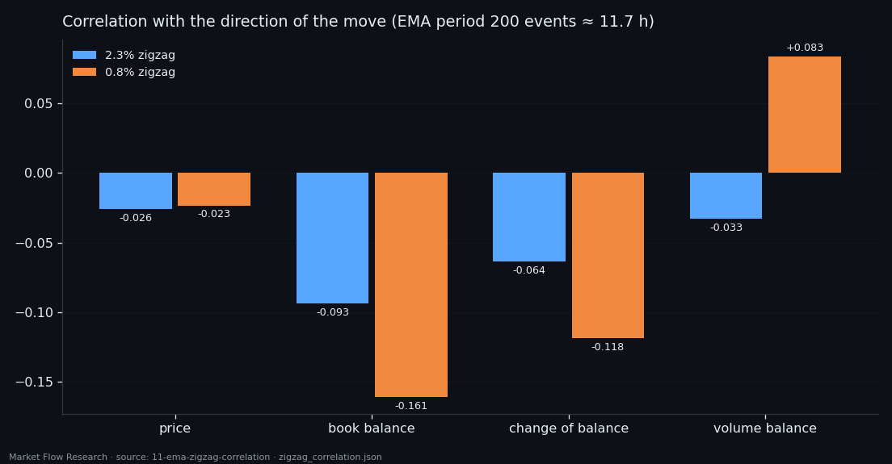
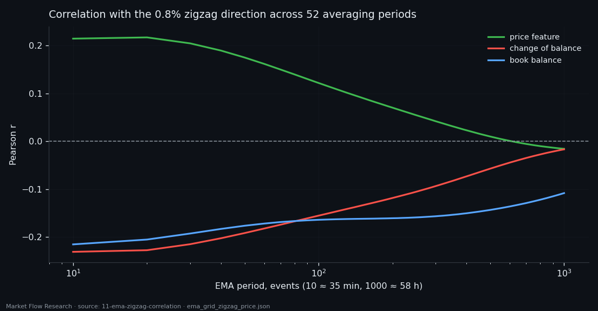
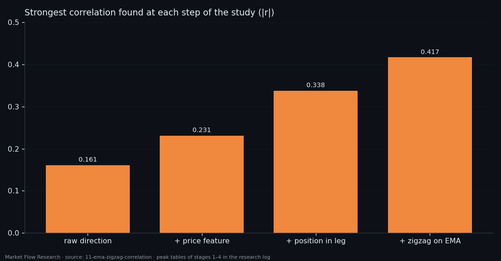
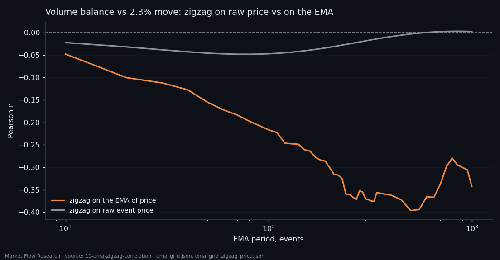

Twelve Hours of Order-Book State and the Direction of a Move — From 0.16 to 0.42
In shortDoes the order book, averaged over about half a day, know which way the current move is going? We smoothed four book features with exponential averages on 52 horizons from 35 minutes to 58 hours and correlated them with the direction of 2.3% and 0.8% zigzag moves on 40,242 BTC events. The raw answer is weak (−0.16 at best). Three changes of question — a price feature instead of price, the position inside the leg instead of the direction, and a zigzag drawn on the same smoothing — lift the ceiling to 0.42. That is 17% of the variance, from a description that ignores the last hour entirely.
Narrated walkthrough · plays from YouTube when you press play.
① The raw answer: weak, and pointing backwards
The events are the same 210-second windows as everywhere in this series — 40,242 BTC events from 14 February to 16 August 2026, laid out as one continuous timeline. Each is reduced to three normalised differences between the two sides of the book: balance (resistance versus support), d_balance (how fast that balance changes) and vol_balance (buy versus sell volume). Then each gets an exponential average over 200 events — about 11 hours 40 minutes — together with the price.
The target is the direction of the zigzag move the event sits in: +1 up, −1 down, for two independent zigzags, 2.3% and 0.8%. No parameters, no randomness, no seed; the result is deterministic.
The honest first answer: there is a link, and it is weak. The strongest is the book balance against the small zigzag: −0.161 (Pearson; Spearman −0.146), about 2.6% of shared variance. The sign is negative — during a rise the averaged book leans toward support, during a fall toward resistance — and it holds on both zigzags and both metrics. On the big 2.3% zigzag everything is roughly half as strong. The price level itself says almost nothing (−0.02 to −0.04), which is what you would expect.

② A price feature beats the price
The first change: instead of averaging the price, turn it into a feature built by the same rule as the others — the normalised difference between upward and downward movement inside each 14-second block, i.e. how straight the price travelled. All four series then live on the same [−1, 1] scale.
We swept the averaging period over 52 values, from 10 to 1,000 events (0.6 to 58.3 hours). The price feature reaches +0.217 against the 0.8% zigzag at period 20 (about 1.2 hours) — where plain price managed −0.023. The change of balance mirrors it at −0.231.
The mirror is not a coincidence. The pair d_balance × price_balance correlates at −0.67 to −0.93 across the whole grid: the difference in how the two walls move is mostly the same information as the direction of price, with the opposite sign. None of the six feature pairs is close to independent (|r| from 0.24 to 0.93). Four series, fewer than four pieces of information — and the ceiling is still about ±0.23, some 5% of the variance.

③ Ask where, not which way — on a smoothed zigzag
Two more changes of question moved the ceiling far more than any feature did.
Position instead of direction. Every event gets its place inside its zigzag leg: −1 at the low pivot, +1 at the high pivot, proportional in between — and the feature is rescaled the same way over the same leg, so like is compared with like. On the small zigzag this gives the strongest numbers so far: price feature +0.328, change of balance −0.338, with peaks on long periods (450–1,000 events) rather than 10–20. The book holds "where are we in the leg" better than "where is the leg going".
A zigzag drawn on the same smoothing. Instead of pivots on raw event prices, first smooth the price with the same EMA period as the features, then draw the zigzag. Now volume balance against the 2.3% direction goes from −0.049 to −0.396, and the best cell of the study appears: volume balance against the position in a 0.8% leg, period 380 events (≈ 22 hours), −0.417 — about 17% of the variance against 5% before. Two signs flip in the process: book balance and its change run against small wiggles but with the smoothed trend (+0.24).
We also tested three ways to rescale inside a leg (min-max, robust, quantile). They change the magnitude by 0.02–0.09 and never flip a sign — quantile wins on raw price, min-max on smoothed price, robust is weakest because a leg is a monotone move, not a cloud around a centre.

④ What 0.42 means — and what it does not
The picture is consistent and it is useful: slow book state carries real information about the phase of a move, and it carries it best when the question is posed on the same time scale as the features. The volume balance is the most stable of the four: buying pressure runs against the rise, −0.30 to −0.40 on long periods, on every variant.
Two limits keep this from being a trading rule. First, the target is a zigzag label, and a zigzag pivot is only confirmed after the move — the correlation describes a leg, it does not call it in advance. Second, a smoothed zigzag moves its pivots later still. This study measured how much the slow book knows about the leg; the next ones in this series try to turn that into a label a model can learn causally, event by event.

Reproduce this study
- Research log (.md, Ukrainian): goal, data, plan, scripts, every confirmed stage and table — enough to rerun the study
- Reproduction kit (.zip): the study's scripts, project rules and base scripts that build every class
All our bots have been tested live. The best one is Line 7.
More than a dozen bots were built from this research. Line 7 — two small transformers that read 160 hours of order book as one picture — is the only one ahead of buy & hold in live trading: +5.44% since 5 Oct while BTC moved −5.29%. Every trade is in the report.
Everything on this site is research, not financial advice.
How to read this site in 5 minutes · All studies as one .md for AI · All research
← All research